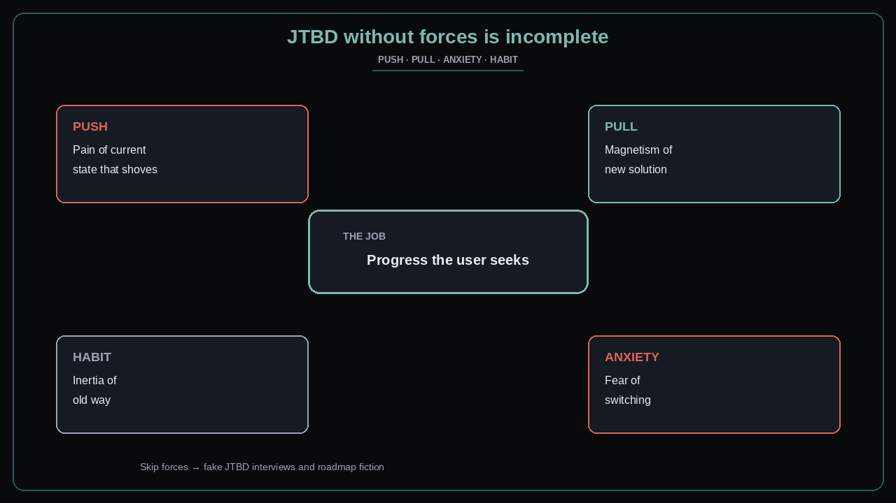

JTBD without forces is incomplete
Source: George / prodmgmt.world (@nurijanian)
original post
What it claims
JTBD without forces is BS. Naming the “job” alone is not research. The usable claim: progress-seeking must be paired with the four forces of progress — push (of the current situation), pull (of the new solution), anxiety (of the new), and habit (of the old). Skip forces and you get polite interviews that never predict switching.
Why it matters for a PO
POs write “users want to X” epics and wonder why adoption stalls. Habit and anxiety kill launches that only sold the pull. Discovery that never maps forces produces roadmaps of features users nod at and never hire.
3 takeaways
- Job statement + forces (push, pull, anxiety, habit) — or it is not JTBD research.
- Pull without push is a nice-to-have; anxiety/habit explain “interested but no switch.”
- Design the Increment to increase push/pull or reduce anxiety/habit — not only to add capability.
Practice this week
For your top opportunity, fill a one-pager: job in one sentence; then push, pull, anxiety, habit with a real quote or observation each. If any force cell is empty, schedule one interview that only probes that force before you add another feature story.